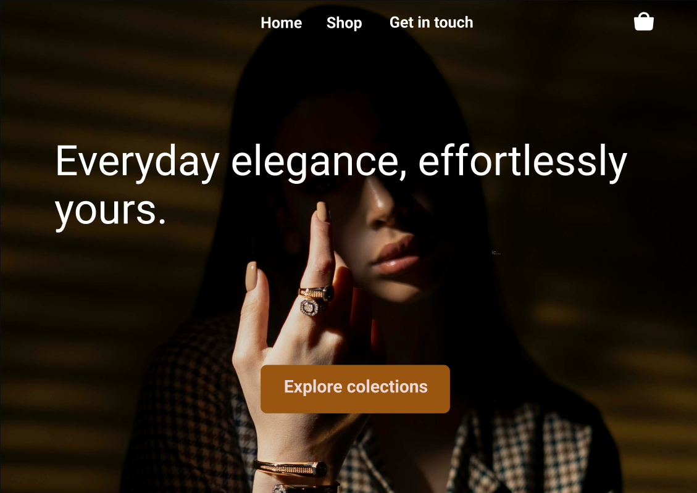
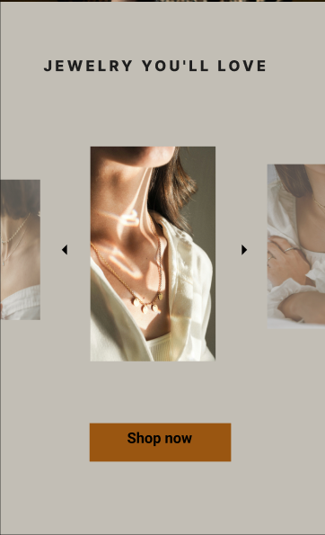
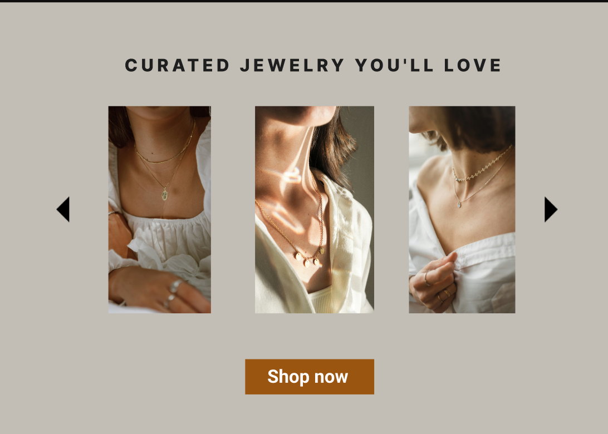
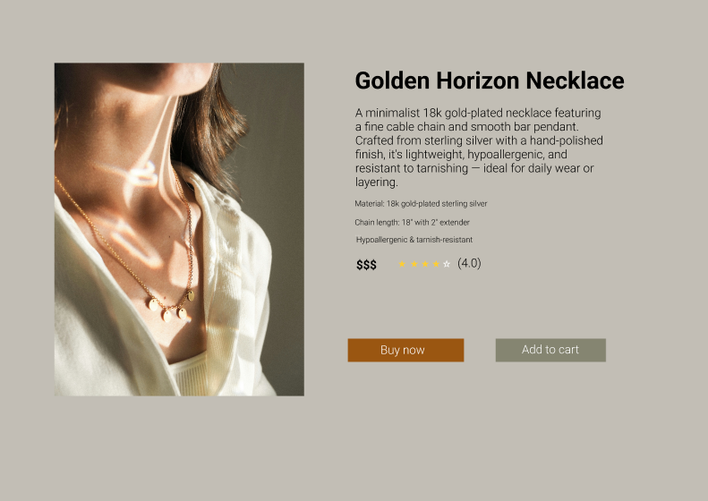
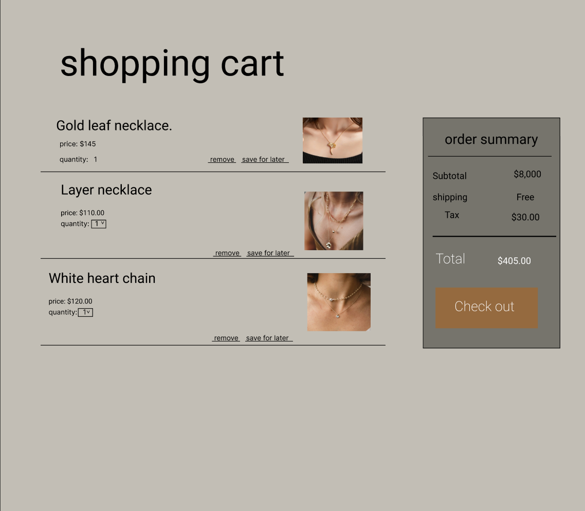
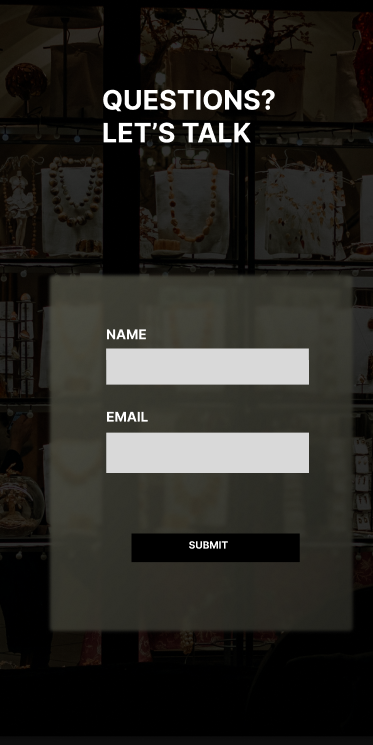
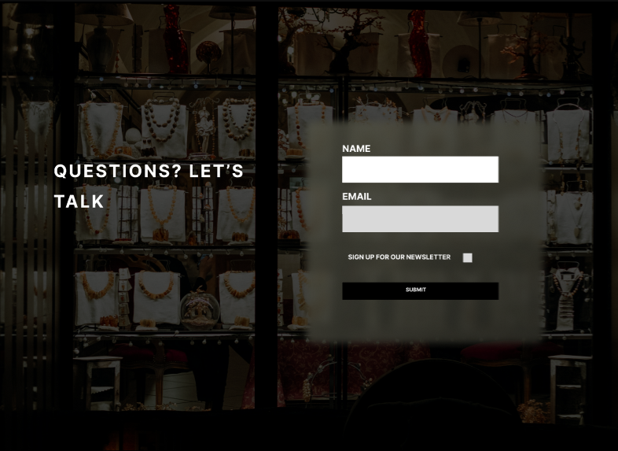
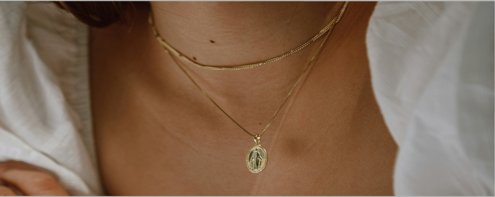
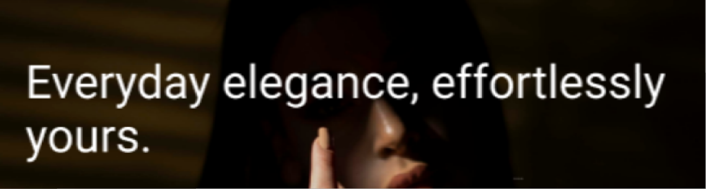

Jewelry eCommerce. (Case study)
Project Overview
Design an elegant and intuitive eCommerce website for a fictional jewelry
brand to showcase curated collections and drive conversions through visual storytelling and smooth usability.
Role:
UI/UX Designer responsible for user flow, visual identity, layout, and prototyping.
Tools Used:
figma
User flow
Homepage — Eye-catching hero with value proposition + CTA.


Product Discovery — Clean carousel and gallery layout for exploration.


Product Details — Clear specs, trust signals (ratings), and purchase options.

Cart — Easy-to-scan layout with order summary.

Contact — Transparent and minimal form to reduce user hesitation.

Design Decisions

Warm neutrals and gold tones were used to reflect elegance and sophistication.

High-quality photography gives an editorial feel and builds emotional connection.
Typography is clean and luxurious, with emphasis on readability and whitespace.
Responsiveness
Mobile version was designed for seamless browsing on smaller screens. Priority was given to:
Fixed cart CTA
Simplified layout hierarchy
Large touch targets
Outcome
- Fully designed prototype with all key pages: Homepage, Product page, Cart, Contact.
- Visuals align with brand tone, and layout supports business goals (conversion).
What I Learned
This project deepened my understanding of balancing aesthetics with usability, especially for
high-ticket eCommerce. It also taught me how to prioritize content hierarchy and structure product information
to support faster decisions.